目次
1. 概要
本書は、InSize アプリケーションの基本操作を画面イメージ付きで説明するHTML形式の操作説明書です。
案件一覧から案件を開き、案件詳細で基本情報、回路設計、配置設計、結果表示を確認します。必要に応じて各編集ダイアログを開き、設定内容の確認や編集を行います。
| 分類 | 主な操作 |
|---|---|
| ログイン | ユーザーIDとパスワードを入力してアプリケーションに入ります。 |
| 案件一覧 | 案件カードを選択して案件詳細へ移動します。新規作成やコピー作成もここから行います。 |
| 案件詳細 | 基本情報、筐体情報、回路設計、配置設計、結果表示を確認・編集します。 |
| 生成実行 | 回路生成、配置生成、整列、SVG保存の実行状況を確認します。 |
2. ログイン
- ログイン画面で「ユーザーID」を入力します。
- 「パスワード」を入力します。
- 「ログイン」ボタンをクリックします。
ログインに成功すると、案件一覧画面へ移動します。入力内容が正しくない場合はエラーメッセージが表示されます。
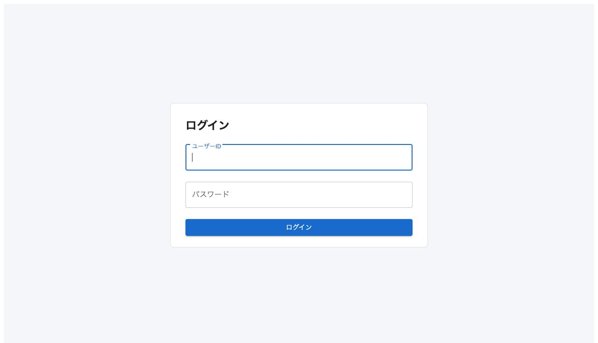
3. 案件一覧
- 左側の「検索条件」でステータスを選択し、表示対象を絞り込みます。
- 案件カードの図面番号、担当者、更新日を確認します。
- 編集したい案件カードをクリックして、案件詳細画面へ移動します。
- 新規に案件を作成する場合は「新規案件作成」をクリックします。
- 既存案件を元に作成する場合は、対象案件を選択して「コピーして作成」をクリックします。
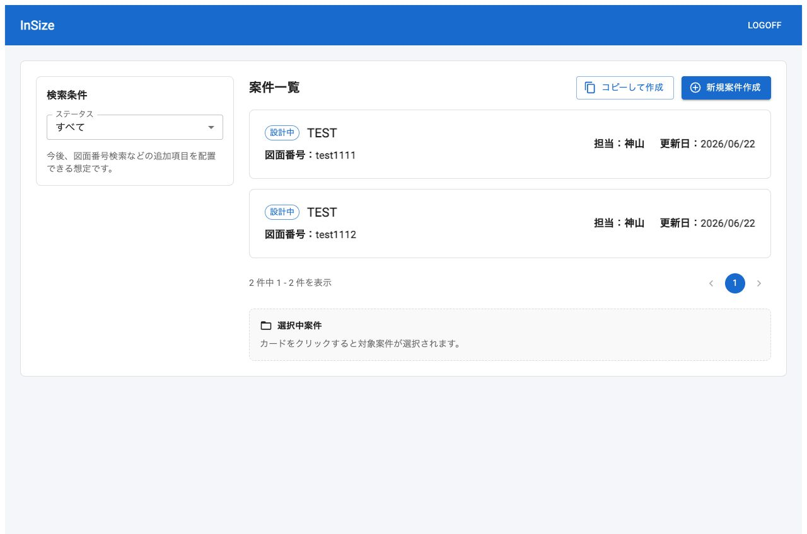
4. 案件詳細
案件詳細画面は、左側の「案件・仕様設定」と右側のタブ領域で構成されています。上部ヘッダーから「案件一覧」へ戻る、または「保管」を実行できます。
4.1 回路設計タブ
- 「回路設計」タブで回路図を確認します。
- 「回路結合を編集」アイコンから回路編集ダイアログを開きます。
- 「ユニット追加」からユニット追加ダイアログを開きます。
- 回路図上のユニットをクリックすると、機器ブロック一覧を確認できます。
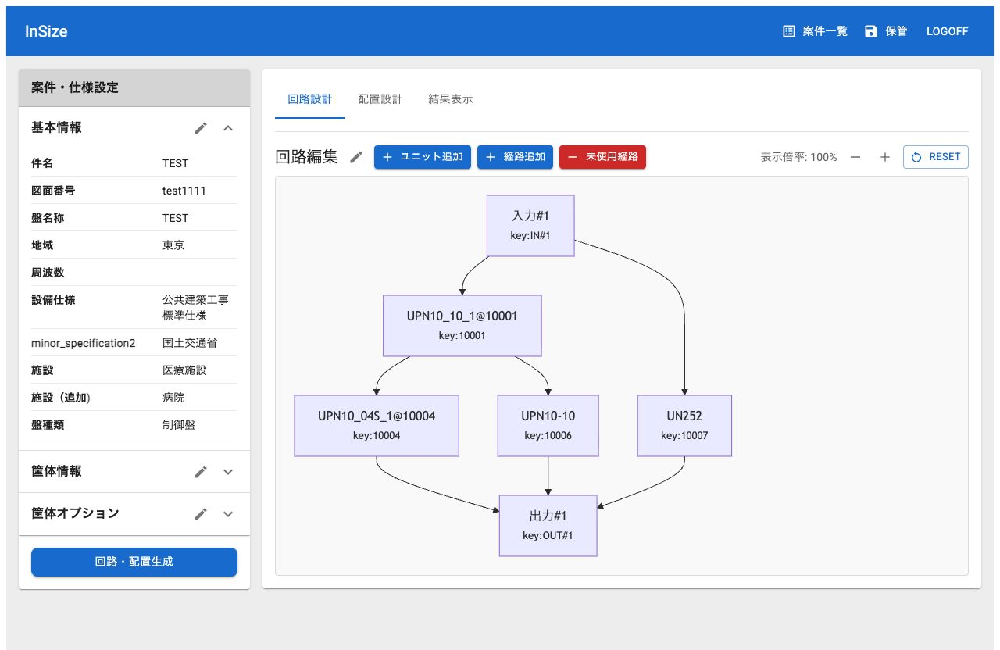
4.2 配置設計タブ
- 「配置設計」タブでユニット配置、入出線、列幅、ガター情報を確認します。
- 「配置編集」アイコンから配置編集ダイアログを開きます。
- 入線・出線・種別の領域をクリックすると、BOX設定を編集できます。
- ユニット行をクリックすると、ガター編集ダイアログを開けます。
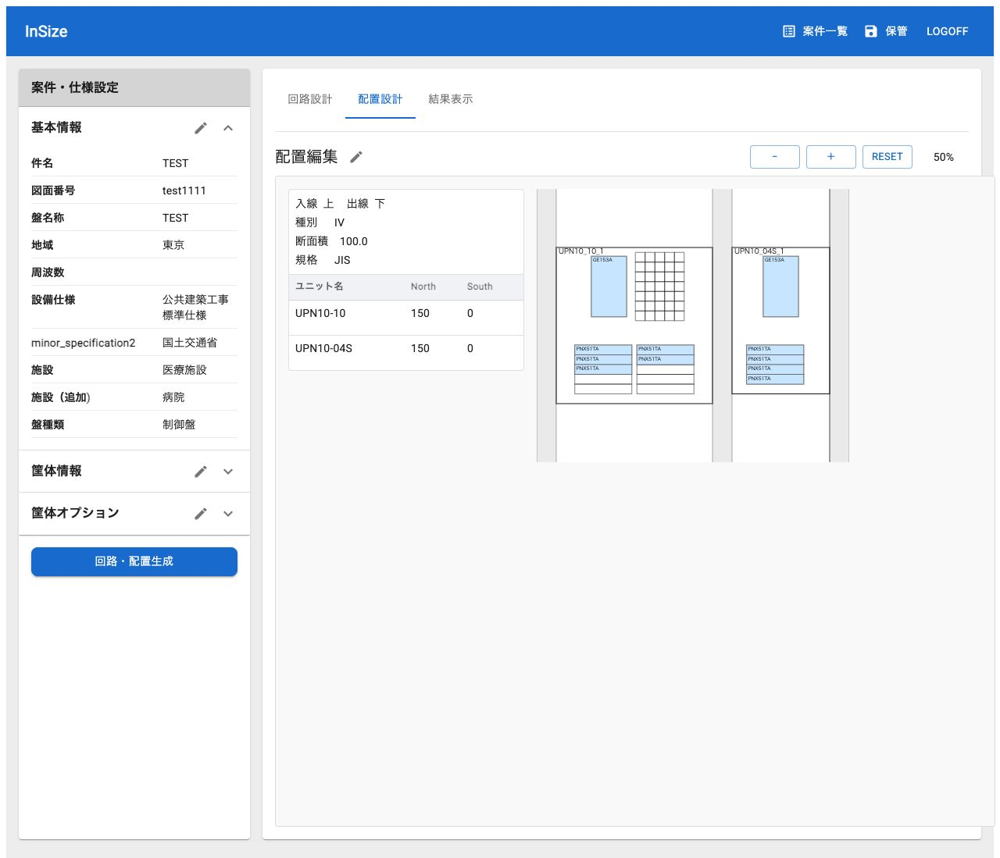
4.3 結果表示タブ
- 「結果表示」タブでキャビネット品名、内器高さ、入出線位置、仕様などを確認します。
- 「ULF DOWNLOAD」からULFファイルを出力します。
- 「拡張ULF」から拡張ULFを出力します。
- 「詳細表示（PDF）」から結果PDFを表示します。
- キャビネット品名横の編集アイコンから箱選定ダイアログを開きます。
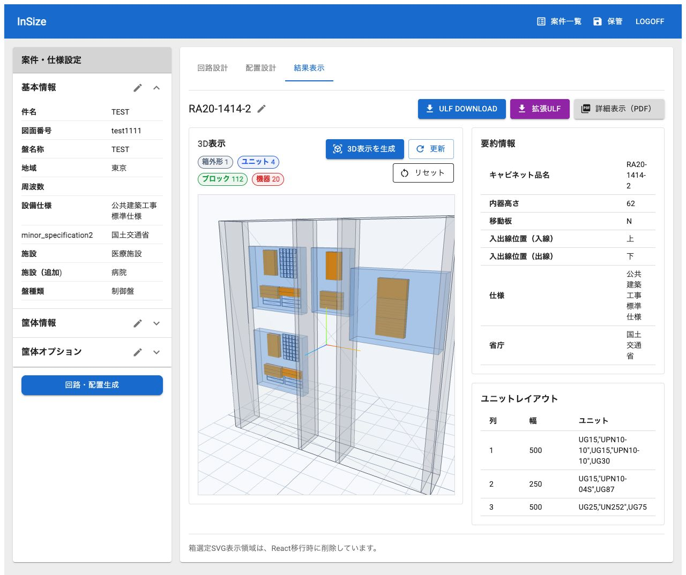
5. 回路生成 / 配置生成
- 案件詳細画面の「回路・配置生成」をクリックします。
- ストア概要でユニット数、デバイス数、回路ノード数、配置件数を確認します。
- 開始点を「回路生成から」「AI初期配置から」「整列配置から」から選択します。
- 「生成開始」をクリックすると、実行フローに従って処理が開始されます。
- 「生成ロジック経過」で処理ログとエラー内容を確認します。
注意: 生成開始はバックエンド処理と保存処理を伴います。実行前に対象案件と開始点が正しいことを確認してください。
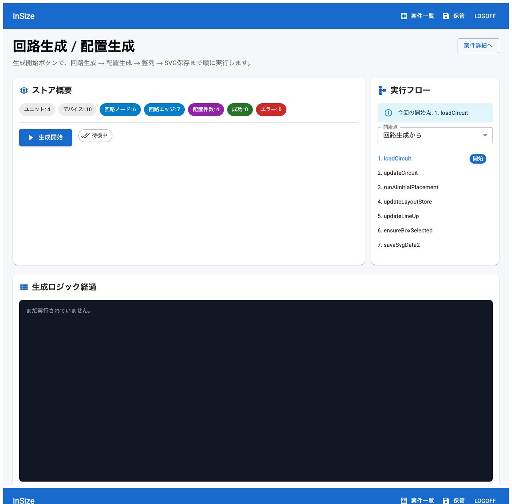
6. 案件・仕様設定ダイアログ
6.1 基本情報編集
- 左側の「基本情報」見出しにある編集アイコンをクリックします。
- 件名、図面番号、盤名称、地域、設備仕様、施設、盤種類などを入力または選択します。
- 変更を反映する場合は「保存」、中止する場合は「キャンセル」をクリックします。
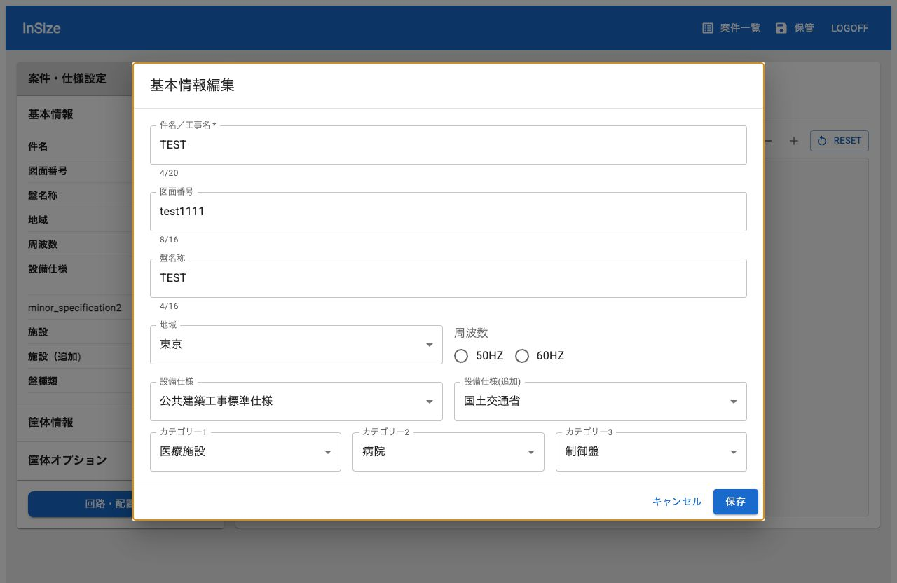
6.2 筐体情報編集
- 左側の「筐体情報」見出しにある編集アイコンをクリックします。
- 設置場所、設備用途、材質、構造、塗装色、寸法、入線、出線を設定します。
- 塗装色を色見本から選ぶ場合は「Color Picker」をクリックします。
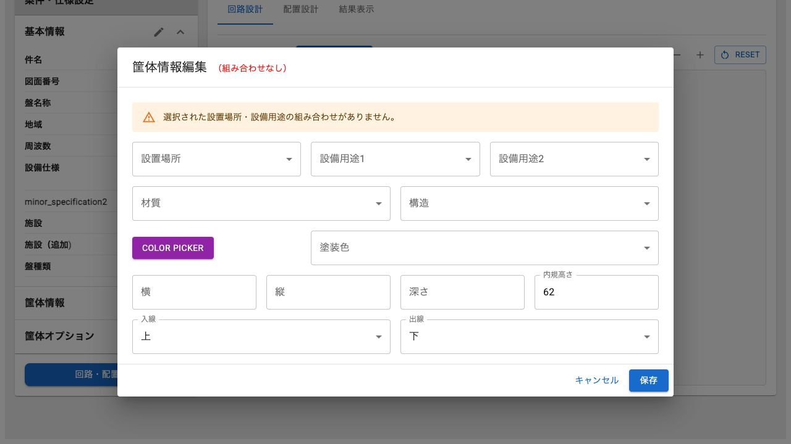
6.3 ColorPicker
- 標準色または準標準色の色見本をクリックします。
- 選択した色が筐体情報の塗装色に反映されます。
- 操作を終える場合は「閉じる」をクリックします。
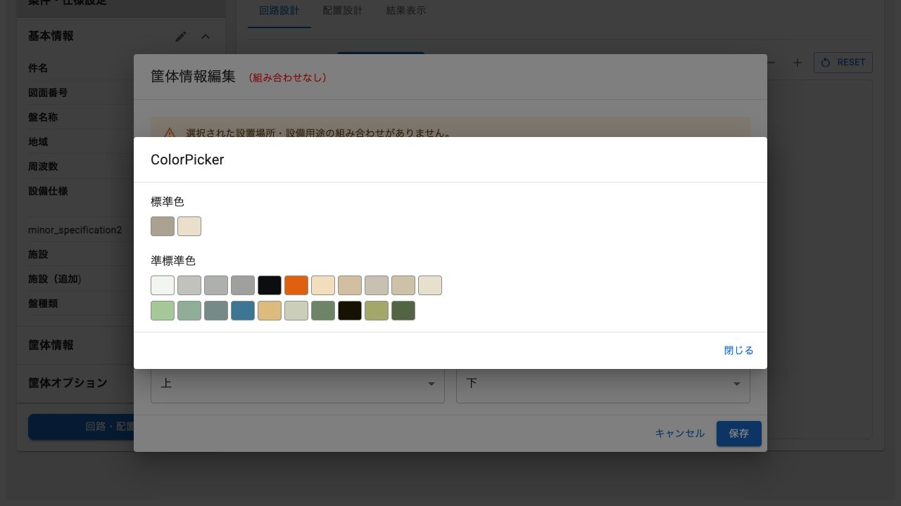
6.4 筐体オプション
- 左側の「筐体オプション」見出しにある編集アイコンをクリックします。
- オプション分類とオプション部品を選択します。
- 「オプション追加」をクリックして、追加候補一覧を開きます。
- 数量を確認・変更し、「保存」で反映します。
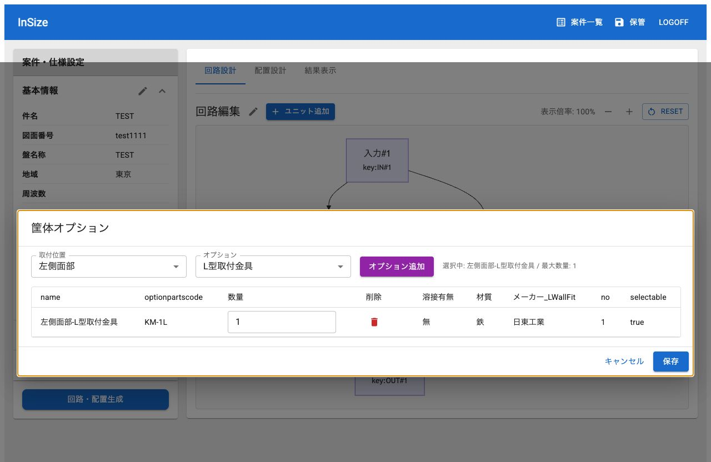
6.5 オプション追加
- 追加可能なオプション候補を一覧で確認します。
- 追加したい行の「追加」をクリックします。
- 追加後、筐体オプション画面に戻り数量を確認します。
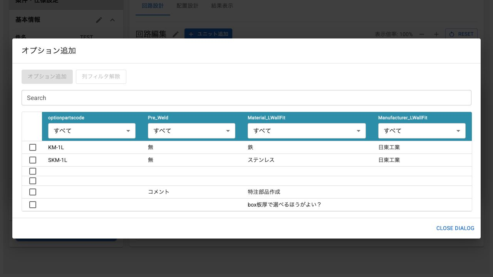
7. 回路設計ダイアログ
7.1 回路編集
- 回路設計タブで「回路結合を編集」アイコンをクリックします。
- 結合したい2つのブロックを順番にクリックします。
- 結合済みの2つを選択すると結合解除できます。
- 変更を反映する場合は「反映」、中止する場合は「キャンセル」をクリックします。
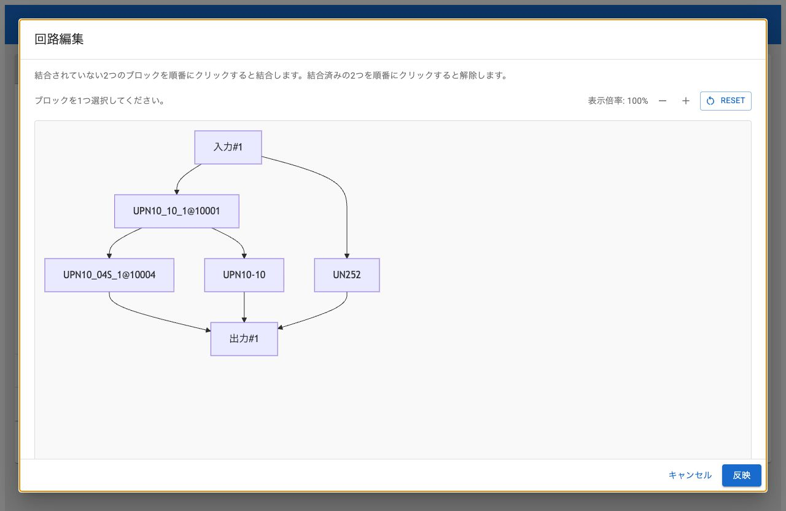
7.2 ユニット追加
- 回路設計タブで「ユニット追加」をクリックします。
- ユニット一覧から追加するユニットを検索・選択します。
- 必要な条件を設定し、追加操作を行います。
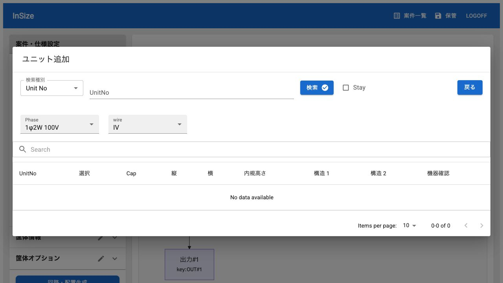
7.3 機器ブロック一覧
- 回路図上のユニットをクリックします。
- UNIT SVGと機器ブロック一覧を確認します。
- 対象ブロックの行を選択すると、登録済み機器と追加編集ボタンが表示されます。
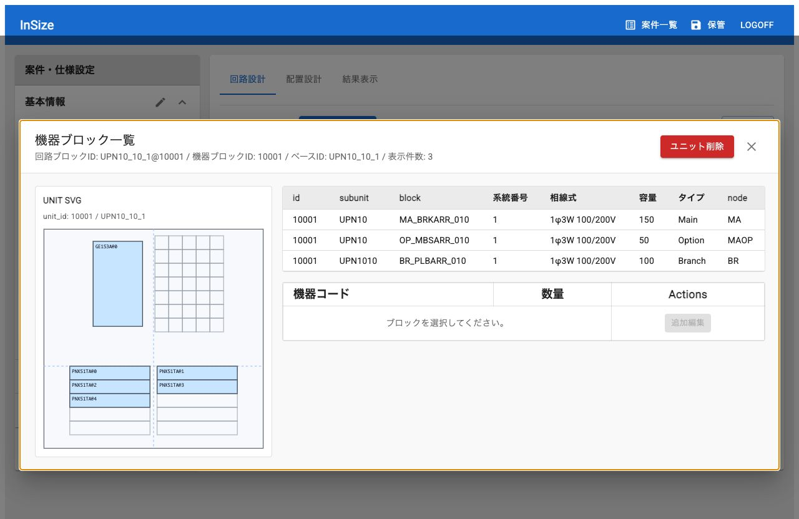
7.4 機器/追加編集
- 機器ブロック一覧で対象ブロックを選択します。
- 「追加編集」をクリックします。
- 現在の機器、数量、配置方向、候補一覧を確認します。
- 変更する場合は機器追加、転置、削除、更新などを行います。
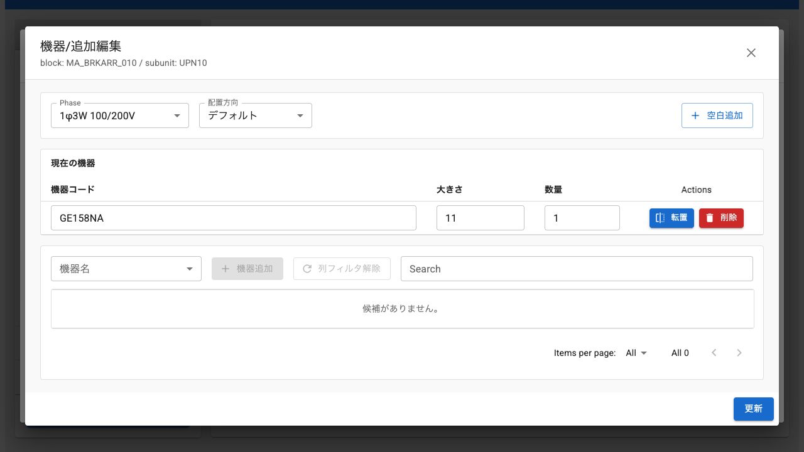
7.5 ユニット削除確認
- 機器ブロック一覧で「ユニット削除」をクリックします。
- 削除対象を確認します。
- 削除する場合のみ確定ボタンをクリックします。中止する場合は「キャンセル」をクリックします。
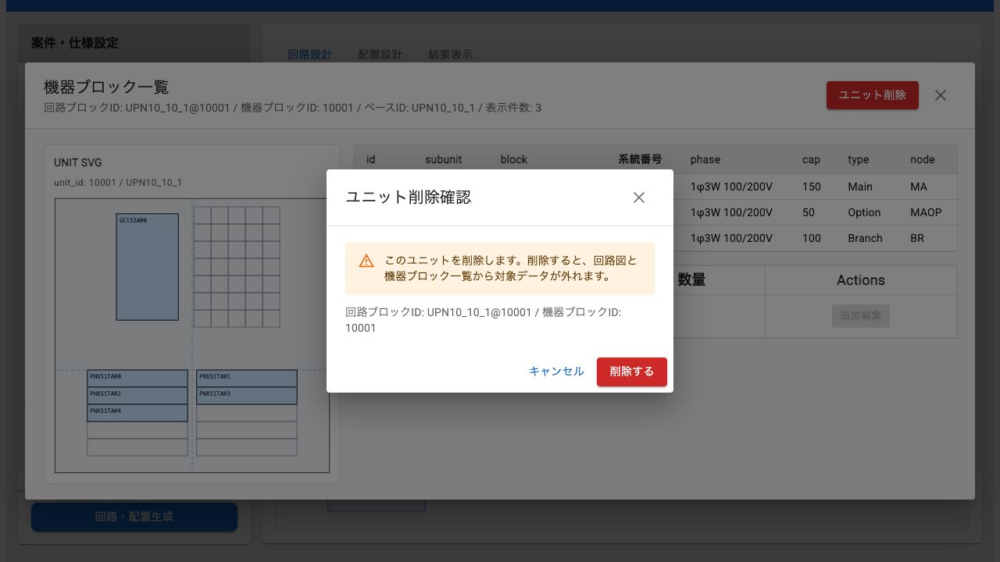
8. 配置設計ダイアログ
8.1 配置編集
- 配置設計タブで「配置編集」アイコンをクリックします。
- 配置編集用SVGを確認します。
- BOX設定、ユニットガター編集、箱選定などの補助操作を行います。
- 編集を終える場合は「閉じる」をクリックします。
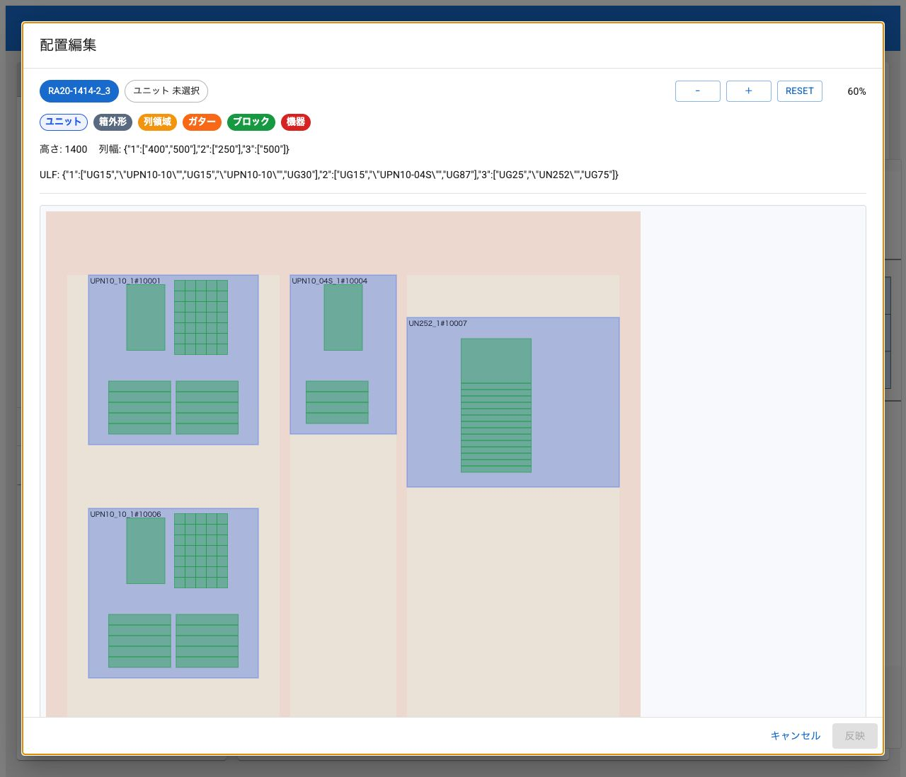
8.2 ガター編集
- 配置設計タブのユニット行をクリックします。
- North、South のガター値を確認・入力します。
- 変更する場合は「Update」、中止する場合は「Cancel」をクリックします。
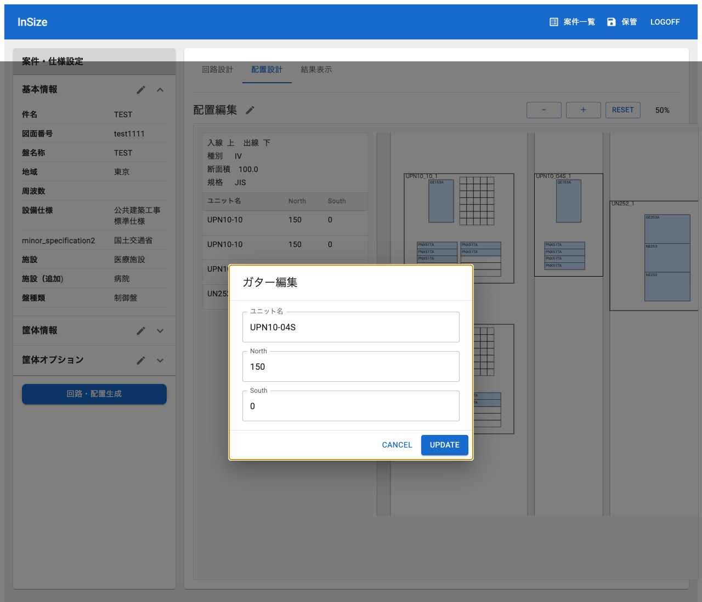
8.3 BOX設定
- 配置設計タブの入線・出線・種別の領域をクリックします。
- 入線、出線、種別、断面積、規格、ガター、列幅、配置高さを確認・設定します。
- 必要に応じて「Gutter計算」を実行します。
- 変更する場合は「Update」、中止する場合は「Cancel」をクリックします。
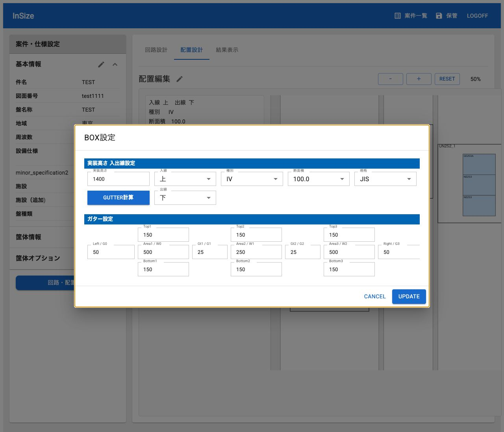
9. 結果表示ダイアログ
9.1 箱選定
- 結果表示タブでキャビネット品名横の編集アイコンをクリックします。
- 検索条件に一致する箱候補を一覧で確認します。
- 列見出しをクリックすると並び替えできます。
- 対象行の「選択」をクリックすると箱が選定されます。
- 操作を終える場合は「閉じる」をクリックします。
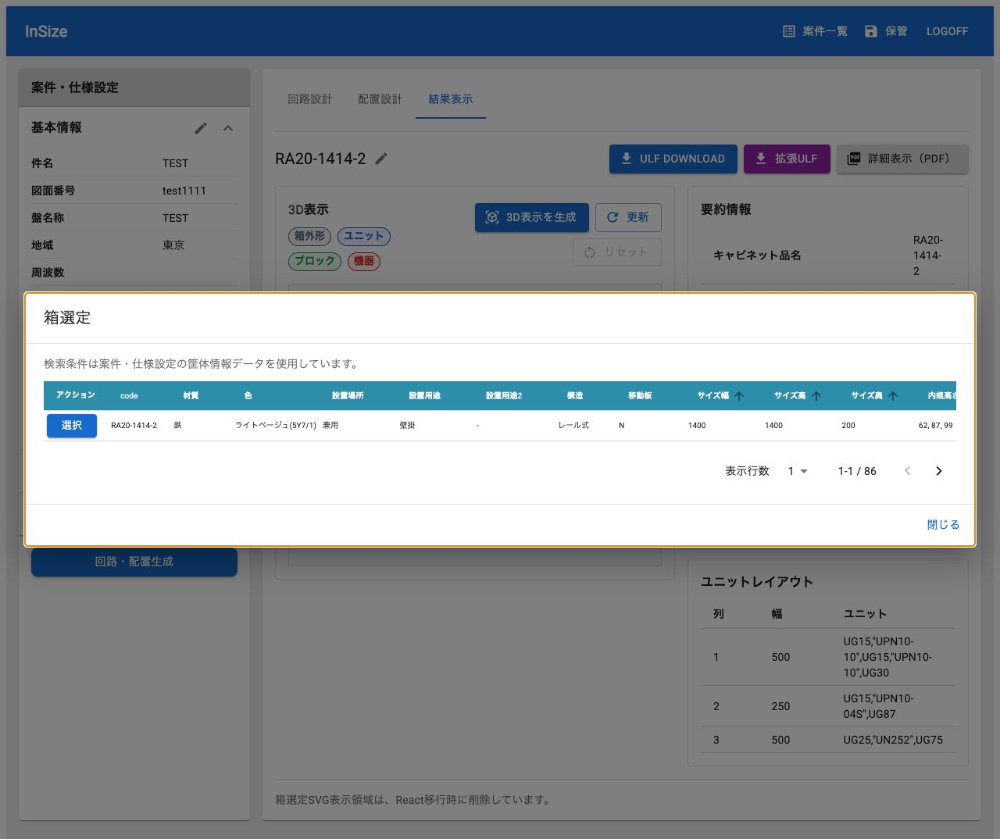
10. 操作上の注意
保存 保管操作
「保管」は現在の案件データを保存します。コピーして保管する場合は、元の図面番号とは異なる図面番号を指定してください。
生成 生成開始
生成開始は複数のAPI処理を順番に実行します。エラーが表示された場合は、生成ロジック経過のメッセージを確認してください。
削除 削除操作
ユニット削除や機器削除は取り消しが難しい場合があります。確認ダイアログの内容を必ず確認してから実行してください。
出力 ULF / PDF
ULF、拡張ULF、PDFの出力にはセッション情報と図面番号が必要です。出力できない場合はログイン状態と案件情報を確認してください。